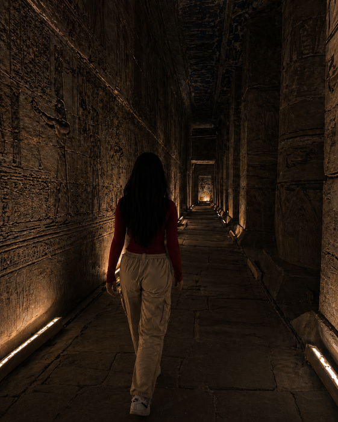
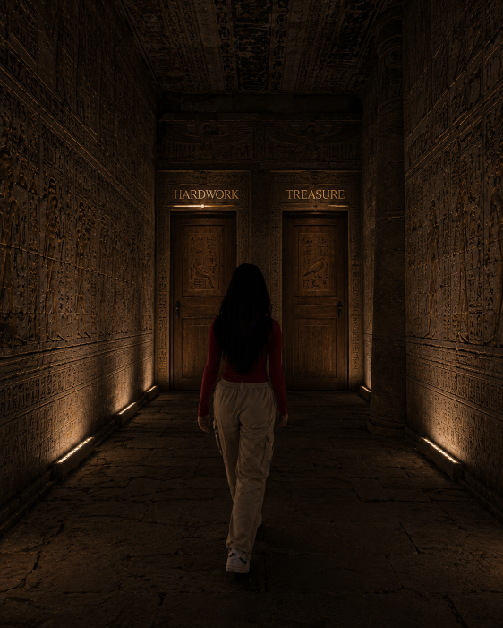

 |
|
 |
Then the corridor opened into a small chamber, and she stopped. Two weathered wooden doors stood before her. One was marked “hardwork” in crude glowing letters, the other shimmered with the word “treasure” in elegant gold. Alone in the quiet dark, Patricia stood frozen, staring at the choice that waited. |
| Go into the harwork room | Go into the treaure room |